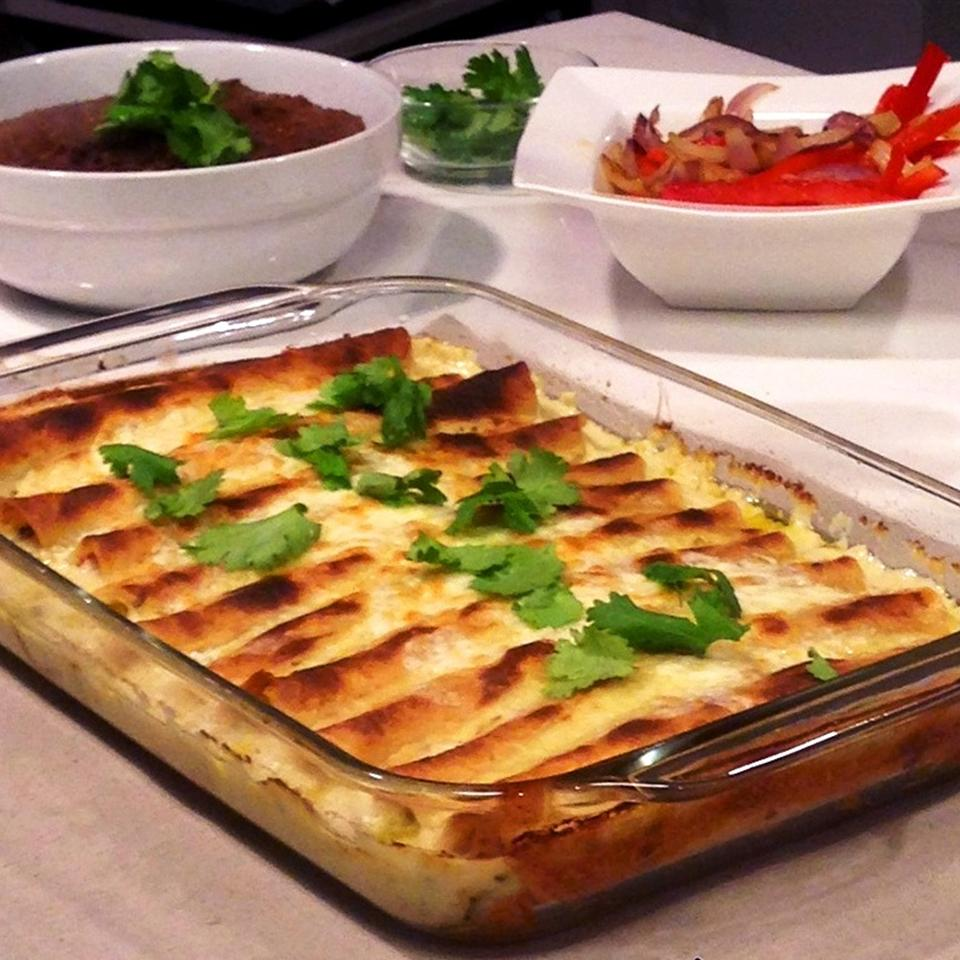

Creamy Shrimp Enchiladas

Description
This is an amazing recipe for shrimp enchiladas. So good!
Ingredients
- Butter
- Diced Red Bell Pepper
- Diced White Onion
- Minced Garlic
- Medium Shrimp
- Chopped Cilantro
- Lime Juice
- Chili Powder
- Salt
Steps
- Preheat the oven to 350 degrees F (175 degrees C). Spray a 9x13-inch pan with cooking spray.
- Melt 2 tablespoons butter in a large skillet over medium-high heat. Saute bell pepper and onion until slightly soft, about 5 minutes.
Add garlic and cook for 1 minute more. Transfer mixture to a bowl.
- Add shrimp to the skillet and cook until starting to turn pink, 2 to 3 minutes.
Add to vegetable mixture and stir in cilantro, lime juice, chili powder, and salt.
- Melt butter in the same skillet over medium heat. Stir in flour and cook, 1 to 2 minutes. Slowly add
chicken broth and cook over medium-high heat, stirring constantly, until sauce thickens, about 5 minutes. Reduce
heat to low and stir in 1 1/2 cups Monterey Jack cheese until melted, 1 to 2 minutes. Remove from heat and stir in sour cream and salsa.
- Stir 1 cup of cheese sauce into the shrimp mixture.
- Fill 1 tortilla with 1/3 cup of the shrimp mixture. Roll tightly and place seam-side down into the prepared baking dish.
Repeat with remaining tortillas; pour remaining sauce over the top.
- Bake in the preheated oven, uncovered, until the tops are golden brown, about 35 minutes. Sprinkle jalapeno
over the top, followed by remaining Monterey Jack cheese. Return to the oven and continue baking until melted, about 5 minutes more.
- Remove from the oven and let sit for 10 minutes before serving.